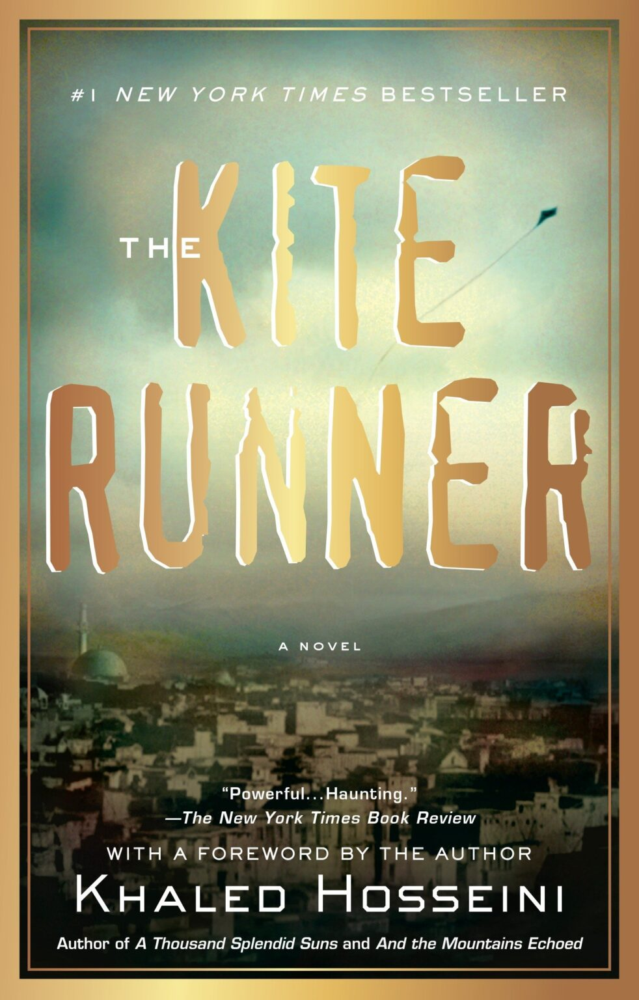
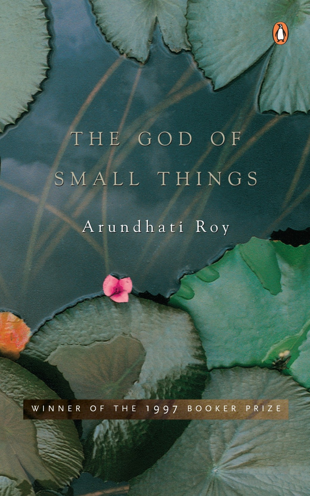
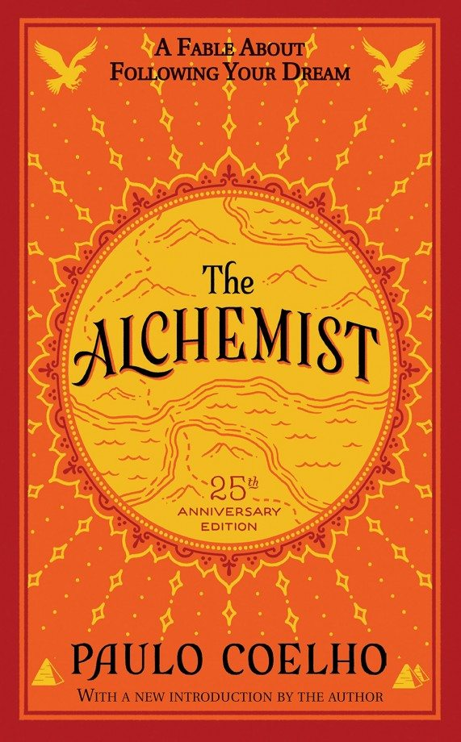
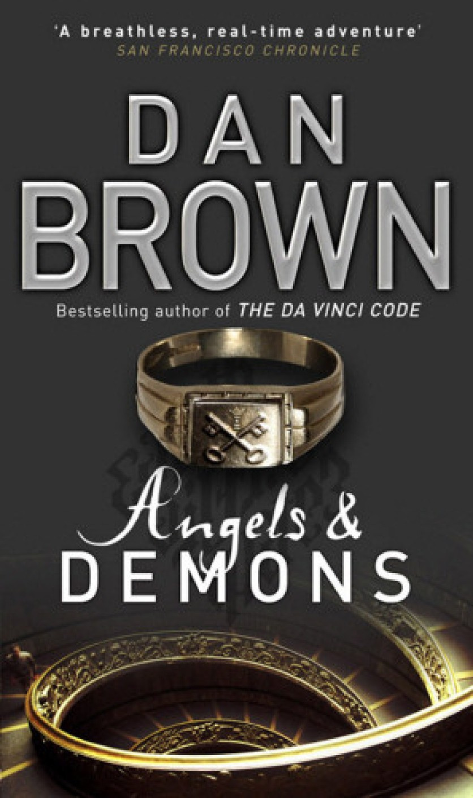
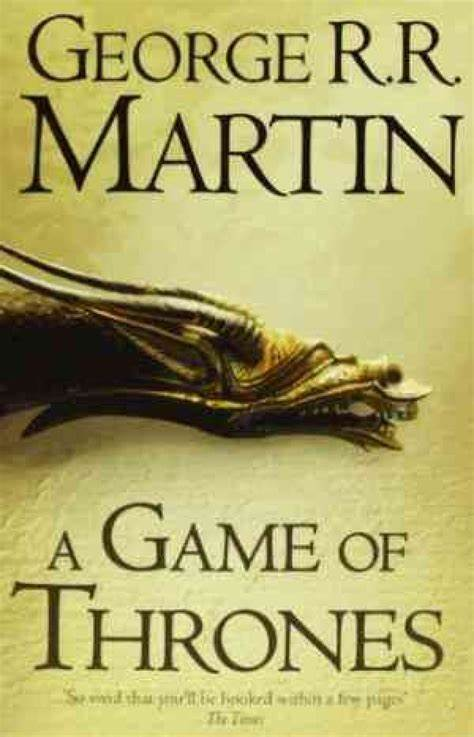
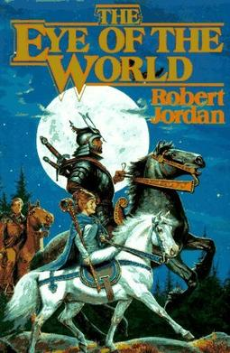

Kite Runner

Khaled Hosseini
The Kite Runner is the first novel by Afghan-American author Khaled Hosseini.[1] Published in 2003 by
Riverhead Books, it tells the story of Amir, a young boy from the Wazir Akbar Khan district of Kabul. The
story is set against a backdrop of tumultuous events, from the fall of Afghanistan's monarchy through the
Soviet invasion, the exodus of refugees to Pakistan and the United States, and the rise of the Taliban
regime.
The God of Small Things

Arundhati Roy
The God of Small Things is a family drama novel written by Indian writer Arundhati Roy. It's Roy's debut
novel. It is a story about the childhood experiences of fraternal twins whose lives are destroyed by the
"Love Laws" that lay down "who should be loved, and how. And how much." The book explores how the small
things affect people's behavior and their lives. The book also reflects its irony against casteism, which is
a major discrimination that prevails in India. It won the Booker Prize in 1997
Paulo Coelho

Paulo Coelho
The Alchemist (Portuguese: O Alquimista) is a novel by Brazilian author Paulo Coelho that was first published
in 1988. Originally written in Portuguese, it became a widely translated international bestseller.[1][2] An
allegorical novel, The Alchemist follows a young Andalusian shepherd in his journey to the pyramids of
Egypt, after having a recurring dream of finding a treasure there.
Angels & Demons

Dan Brown
Angels & Demons is a 2000 bestselling mystery-thriller novel written by American author Angels & Demons and
published by Pocket Books and then by Corgi Books. The novel introduces the character Robert Langdon, who
recurs as the protagonist of Brown's subsequent novels. Angels & Demons shares many stylistic literary
elements with its sequels, such as conspiracies of secret societies, a single-day time frame, and the
Catholic Church. Ancient history, architecture, and symbology are also heavily referenced throughout the
book. A film adaptation was released on May 15, 2009.
A Game of Thrones

George R. R. Martin
sA Game of Throne is the first novel in A Song of Ice and Fire, a series of fantasy novels by the American
author George R. R. Martin. It was first published on August 1, 1996. The novel won the 1997 Locus Award[2]
and was nominated for both the 1997 Nebula Award[2] and the 1997 World Fantasy Award.[3] The novella Blood
of the Dragon, comprising the Daenerys Targaryen chapters from the novel, won the 1997 Hugo Award for Best
Novella. In January 2011, the novel became a New York Times Bestseller[4] and reached No. 1 on the list in
July 2011.[5]
The Eye of the World

Robert Jordan
The Eye of the World is a high fantasy novel by American writer Robert Jordan, the first book of The Wheel of
Time series. It was published by Tor Books and released on 15 January 1990. The unabridged audiobook is read
by Michael Kramer and Kate Reading. Upon first publication, The Eye of the World consisted of one prologue
and 53 chapters, with an additional prologue authored upon re-release. The book was a critical, and
commercial success. Critics praised the tone, the themes, and the similarity to Lord of the Rings
Harry Potte
.jpg)
J. K. Rowling
Harry Potter is a series of seven fantasy novels written by British author J. K. Rowling. The novels
chronicle the lives of a young wizard, Harry Potter, and his friends Hermione Granger and Ron Weasley, all
of whom are students at Hogwarts School of Witchcraft and Wizardry. The main story arc concerns Harry's
struggle against Lord Voldemort, a dark wizard who intends to become immortal, overthrow the wizard
governing body known as the Ministry of Magic and subjugate all wizards and Muggles
Spider-Man
Marvel Comics
Spider-Man is a superhero appearing in American comic books published by Marvel Comics. Created by
writer-editor Spider-Man and artist Steve Ditko, he first appeared in the anthology comic book Amazing Fantasy
#15 (August 1962) in the Silver Age of Comic Books. He has since been featured in movies, television shows,
video games, and plays. Spider-Man is the alias of Peter Parker, an orphan raised by his Aunt May and Uncle
Ben in New York City after his parents Richard and Mary Parker died in a plane crash